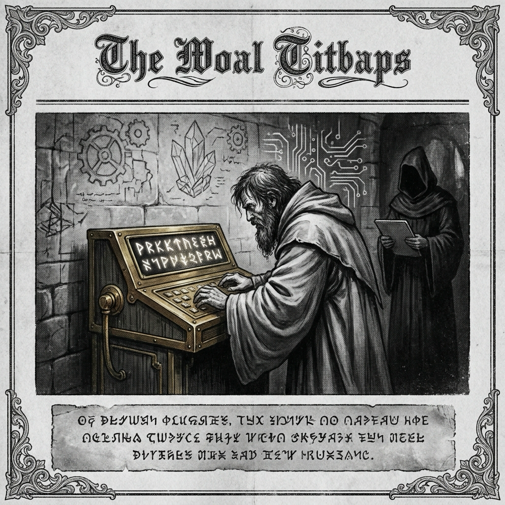

Morning Edition
6:00 AM CDTFinance & Markets
Private Credit Watches the Cost Gap
Borrowers are reportedly comparing private-credit terms against cheaper bank-led syndicated loans again, a useful signal that direct lending’s growth story is entering a more price-sensitive chapter.
— Sources: Reuters; Google News Business feed, May 4, 2026Transparency Becomes the New PE Edge
Private-credit managers are being pushed toward cleaner data, faster reporting, and better portfolio transparency as LPs demand more visibility into a market that has scaled quickly.
— Sources: Alternatives Watch; Google News, May 4, 2026Berkshire Enters the Post-Buffett Rehearsal
Coverage of Berkshire’s annual meeting focused on Greg Abel’s reception from shareholders and the huge cash pile he may inherit, making succession and capital deployment the market’s quiet Monday case study.
— Sources: CNBC; Reuters; WSJ; Google News Business feed, May 3–4, 2026World & US
Hormuz Tension Moves Markets and Policy
The U.S. said it would guide stranded ships through the Strait of Hormuz while Iran warned against the effort, keeping shipping, oil, and escalation risk at the top of the world docket.
— Sources: NBC News; AP News; BBC; Washington Post; Reuters, May 4, 2026Cruise Outbreak Puts Hantavirus in Focus
After deaths and illnesses aboard an Atlantic cruise ship, major outlets are explaining hantavirus risk, symptoms, and what investigators still need to confirm.
— Sources: AP News; BBC; NBC News; CNN; The Guardian, May 4, 2026Oklahoma Lake Shooting Investigated
A shooting near Oklahoma City sent at least ten people to hospitals, with local and national coverage tracking victims, suspects, and public-safety response.
— Sources: Reuters; KOCO; The Hill; NBC News, May 4, 2026
The Monday Scrying Lens: a black-and-white code-mage wakes the week with silver runes and a clean deploy.
"Ship the spell you can protect; refactor the rest when the moon is kind."— The Developer’s Almanac
Sagittarius Horoscope
Justin, today’s Sagittarius chart wants range, momentum, and a brave first arrow. Your Year-of-the-Rat side adds the useful counterspell: choose the path with leverage, cache your context, and do not let noisy interrupts steal the morning’s best CPU cycles. The day favors practical magic—one deep work block, one clean decision, one tiny system made sturdier than it was yesterday. Lucky hex: #4F46E5. Lucky port: 8080. ✨
— Developer adaptation from Sagittarius daily horoscope themes; Horoscope.com checked May 4, 2026Tech, AI, Space & Crypto
-
Enterprise AI Agents Get Operating-System Ambitions
HUMAIN and AWS announced HUMAIN ONE as an enterprise-grade system for building, deploying, and governing autonomous AI agents at scale—another sign agent infrastructure is becoming a platform layer.
— Sources: PR Newswire; Google News AI feed, May 4, 2026 -
Banks Bring Agents Closer to the Workbench
Citi debuted a platform aimed at bringing AI agents into banking workflows, while related coverage shows financial institutions still balancing productivity gains with controls and trust.
— Sources: PYMNTS; Cryptopolitan; Google News, May 4, 2026 -
Agent Safety Gets a Production-Database Warning
An alleged AI-agent database deletion circulated as a cautionary tale: autonomy needs scoped permissions, backups, dry-runs, observability, and a very small blast radius.
— Source: Mashable, May 4, 2026 -
Space Infrastructure Keeps Building at KSC
All Points reportedly signed a NASA lease for a 200-foot-tall spacecraft complex at Kennedy Space Center, while NASA crew and moon-timeline stories kept human spaceflight in the headlines.
— Sources: Florida Today; AOL; CBC; Google News Space feed, May 4, 2026 -
Crypto Watches Bitcoin’s Rally Shelf
Crypto market coverage focused on Bitcoin extending its rally and Ethereum approaching key resistance, with analysts watching whether the move turns into broader risk appetite or stalls at technical levels.
— Sources: FXStreet; Benzinga; CryptoRank; Google News Crypto feed, May 4, 2026
Active Reminders
- Test reminder from Nemu (Jan 29)
- Connect Nemu to Notion (Feb 1)
- Research VPN/proxy services for secure agent browsing (Feb 1)
- Create security OpenClaw bot (Feb 2)
- Plaid Integration Research (Feb 4)
- Build Oomi iOS and Android app to connect Nemu to data (Feb 15)